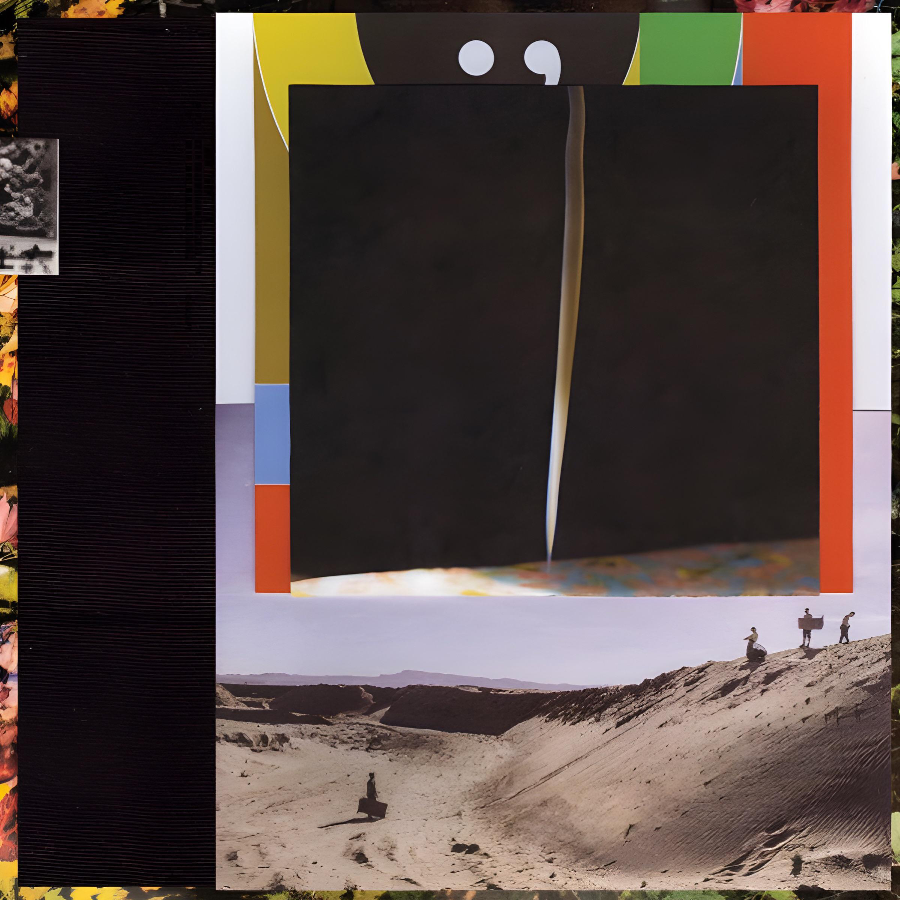

Back to Professional Site
Why I Love Music
My Musical Influences
Genres I love:
Hip-Hop
Folk
Indie Alternative
Favorite Artists:
Dominic Fike
Richy Mitch and the Coal Miners
Jack Harlow
Bon Iver
Dijon
Poolhouse

Beautiful Music
Interactive Tableau Graph